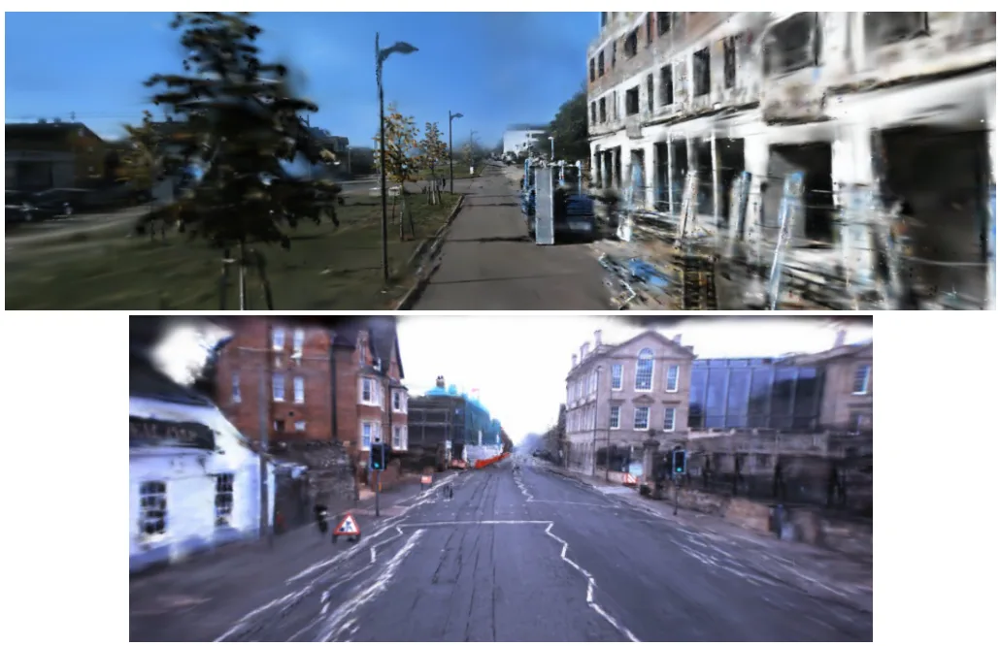
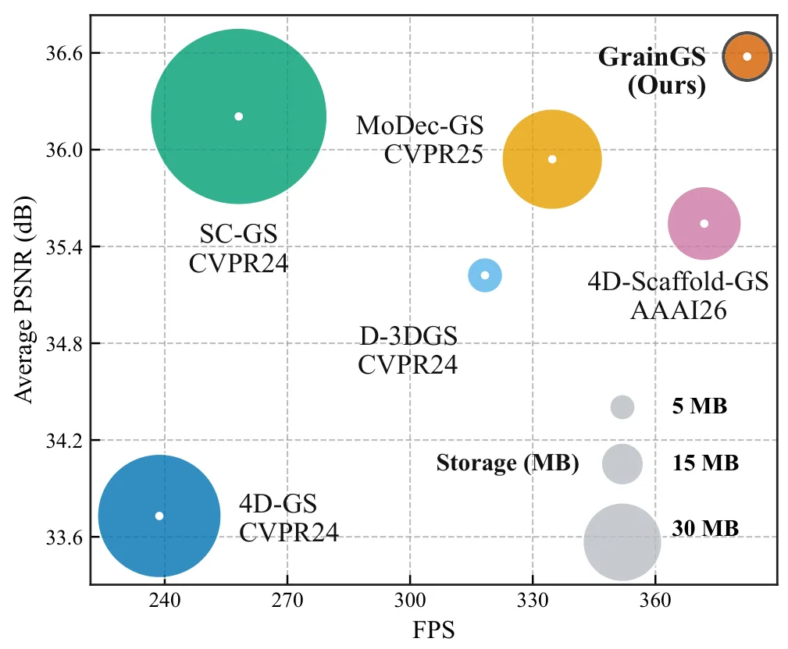
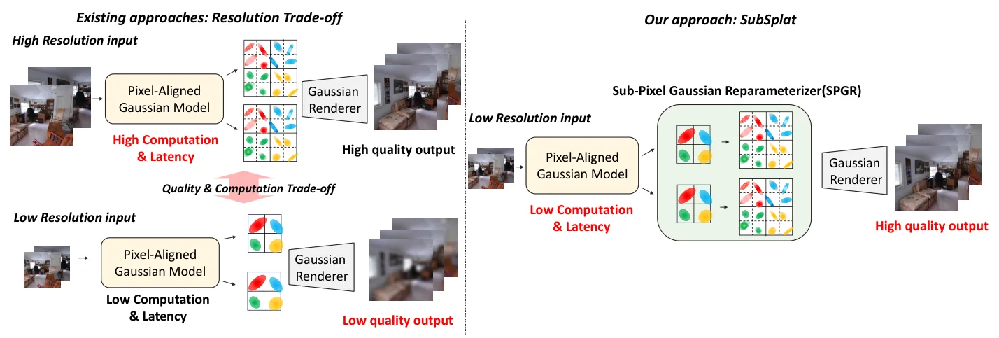

新论文 · 日期 2026-07-23 · score 19 · cs.RO, cs.CV
作者：Panagiotis Mermigkas, Argyris Manetas, Petros Maragos
评分 9.5/10
3DGS SLAM大规模建图实时跟踪流致密化空间分解
一句话工作总结：以特征 SLAM 前端、稀疏锚点网格、极线流致密化和空间分区实现长序列实时 3DGS SLAM。
GLAM-SLAM 是面向大规模室外场景的实时、解耦式 Gaussian-splatting monocular SLAM。系统使用稳健的 feature-based SLAM frontend 进行轻量跟踪，建图侧采用结构化 sparse anchor grid，以便在长序列上控制表示规模并维持场景一致性。为满足 3DGS 的稠密初始化需求，方法基于 epipolar constraints 提出 geometr…
Existing Gaussian-splatting-based monocular Simultaneous Localization and Mapping (SLAM) systems are either tailored to short sequences, are not real-time, or suffer from prohibitive GPU memory requirements, l…

新论文 · 日期 2026-07-23 · score 10 · cs.CV
作者：Jiahao He, Yihua Shao, Zhengkai Zhao, Pan Gao
评分 8.2/10
动态 3DGS梯度解耦新视角合成锚点表示实时渲染
一句话工作总结：以锚点层级和逐高斯形变结合，并用 stop-gradient 稳定 canonical geometry，获得紧凑高速动态 3DGS。
GrainGS 将 hierarchical anchor scaffold 与 per-Gaussian deformation 结合，以平衡动态 3DGS 的局部运动表达、结构稳定性和紧凑性。static warm-up 先从所有时间戳观测建立 time-invariant canonical representation；联合训练时，stop-gradient 阻断经形变路径传回 canonical posi…
Dynamic scene reconstruction with 3D Gaussian Splatting requires a balance between fine-grained motion modeling, structural stability, and compact representation. Existing per-primitive methods provide flexibl…
新论文 · 日期 2026-07-23 · score 10 · cs.CV
作者：Jiayi Xu, Jiahao Lu, Ziqiang Zheng, Yihao Tan
评分 8.5/10
水下三维重建前馈重建相机姿态点图退化适配
一句话工作总结：以受多视图几何约束的退化适配，一次前向传播联合输出水下点图和相机姿态。
WAT3R 针对水下光衰减和后向散射破坏图像质量与跨视图特征一致性的问题，提出从水下图像直接重建三维场景的 feed-forward framework。其核心是把 degradation adaptation 作为 geometry-constrained process，并加入轻量 neural adaptation module 来适配水下成像退化。在单次前向传播中，系统从水下视频直接输出 pixel-ali…
Reliable feedforward underwater 3D reconstruction remains challenging due to severe light attenuation and backscattering, which degrade visual quality and disrupt feature consistency across views, leading to i…

新论文 · 日期 2026-07-23 · score 10 · cs.CV
作者：Jiun Lee, Jaekwang Kim, Sangmin Lee
评分 7.9/10
3DGS像素对齐亚像素重参数化高分辨率渲染多视图聚合
一句话工作总结：从低分辨率特征亚像素细分 Gaussians，并聚合多视图特征，缓解高分辨率 3DGS 的质量—计算矛盾。
SubSplat 针对 pixel-aligned Gaussian Splatting 中输入分辨率与网络计算量的矛盾：提高输入分辨率可改善细节，但网络成本呈二次增长；维持低分辨率则导致 Gaussian density 不足和伪影。方法提出 Sub-pixel Gaussian Reparameterizer，将 primary Gaussians 细分为更精细的 primitives，直接从低分辨率特征恢复结…
Pixel-aligned Gaussian splatting enables efficient and generalizable novel-view synthesis. However, high-resolution rendering faces a critical trade-off where increasing input resolution improves detail at the…

新论文 · 日期 2026-07-23 · score 8 · cs.CV
作者：Xin Zhao, Jianping Li, Qin Zou, Fuxun Liang
评分 8.8/10
闭环检测点云配准Delaunay 拓扑森林建图GNSS 拒止
一句话工作总结：利用树干 Delaunay 拓扑和可靠性加权的解耦位姿估计，在稀疏重复森林中完成闭环与全局配准。
DTIF 面向 GNSS-denied 森林中多平台局部地图的 initialization-free loop closure detection 和 global registration。方法先把树干提取为稳定 landmarks，并以 Delaunay topology 形成紧凑场景表示；随后依据边长和半径统计筛选候选子图，通过 edge-radius consistency verification 及强…
Accurate forest inventory and large-scale mapping are essential for ecosystem monitoring and sustainable forest management. Multiple low-cost edge platforms enable efficient large-area data acquisition, but me…
新论文 · 日期 2026-07-23 · score 4 · cs.CV
作者：Tong Ling, Wenhui Diao, Yingchao Feng, Hanbo Bi
评分 7.6/10
UAV单目深度相机姿态航拍重建视角泛化
一句话工作总结：利用地平面视角—距离关系和渐进深度量化，联合估计大范围 UAV 视角变化下的深度与姿态。
DAPM 面向 UAV 高度、pitch、roll 和 FOV 连续变化时单目深度模型泛化不稳的问题，联合估计 camera pose 与 depth。作者以地平面为参照，推导 viewing angles 与 view distances 的几何对应；Ideal Ground Depth module 利用该关系提供稠密 camera-pose supervision 并增强深度特征，coarse-to-fine…
Monocular depth estimation is a fundamental prerequisite for 3D reconstruction and autonomous navigation in Unmanned Aerial Vehicles (UAVs). In practical deployments, UAVs operate under highly dynamic camera p…